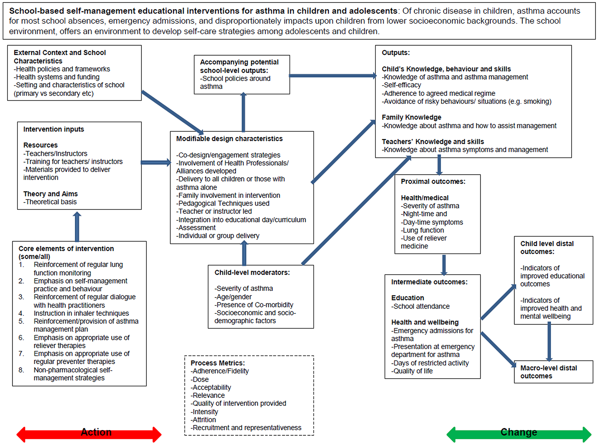

Step 4: Visualise your problem
A visualisation is helpful for clarifing your thoughts and to communicate the problem
Logical models
A logic model creates a diagrammatic representation of the key components of a programme and the way that actions are intended to lead to outcomes The Better Care Fund (2015) - Use a logic models for the definition of research question. It is a conceptual diagram. The diagram helps to illustrate your view on the problem. It should help understand the big picture - Use the logic models for communication, for example to politics - Logical models are created by asking many if-then questions. - You can use a logical model throughout all stages of a review
Steps in creation
This guide follows a Tutorial by Ruth Knight
a. Participation
- Define who you want to participate
- Create a table for participation
| Who will be consulted | How we will consult with them | How will this be achieved | What we are consulting with them about | Who is responsible for collating feedback |
|---|---|---|---|---|
b. State the problem
- Write down the problem concisely (preferably under 250 words)
- Address the following parts: Who is affected? What are the causes? What are the symptoms? Key findings of previous studies? What are the consequences?
- You can use the “Problem Tree Approach”
c. State the solution
- Write down the goal or the intervention
- It should contain a solution about the problem, that you stated earlier
d. State the resources needed
- This step is typical in the creation of a logical model but is probably not necessary for a systematic review, because we wont actually be doing a program
- Write down what resources are needed to implement the solution for the problem (not the resources needed for doing a review)
e. State the outputs
- What will happen if the solution is applied to the problem
- Outputs are the direct results of the intervention
- Outputs can be grouped
- You can divide the outputs in activities and who is affected
f. State the outcomes
- Outcomes can be divided into short-term, medium-term and long-term outcomes
Example

{kind=link}
Directed acylcic graphs (DAG)
- Use a DAG
Document
You can put your logic model into the protocol